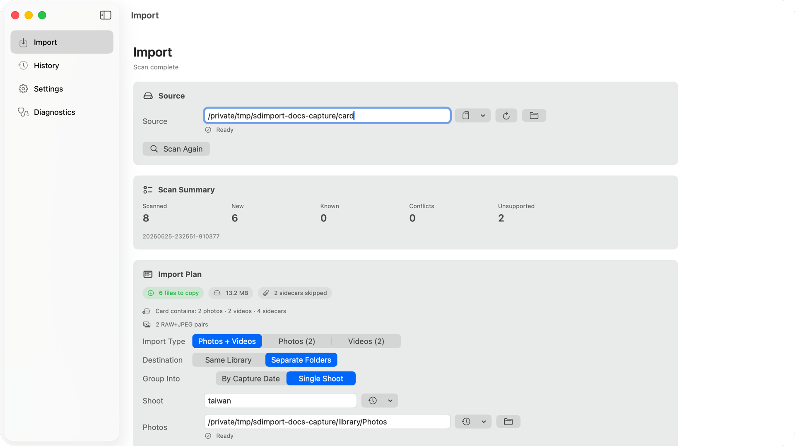

Preview before copying
Scan the card, review what will copy, and inspect destination folders before starting the import.
A quiet macOS utility for the after-shoot handoff: choose a source, scan the card, confirm exactly what will copy, avoid duplicate originals, and keep camera metadata files visible before anything moves.
Free, open source, signed and notarized. Requires an Apple Silicon Mac running macOS 14 or newer.

The screencast shows the core loop in the real app: choose a source, scan it, then confirm import type, destination folders, grouping, sidecars, and files before copying.
Designed for repeated card work, not one-off file browsing. The app keeps source, destination, skipped files, and import history visible before and after the copy.
Use the automatic card prompt or manually select a mounted card, folder, or test source.
After the scan, choose photos, videos, or both, then decide whether they land in one library or separate folders.
Check new files, already-copied originals, camera metadata sidecars, conflicts, and required space in one screen.
After import, repeat scans show originals you already copied so the same card does not duplicate work.
SD Import focuses on the checks that matter before files move: source, destinations, counts, space, already-copied originals, and camera metadata.
Scan the card, review what will copy, and inspect destination folders before starting the import.
Reinsert the same card without duplicating originals that SD Import has already imported.
Camera support files stay visible in the preview, so sidecars and unsupported files do not disappear into the copy silently.
SD Import is most useful when a card is not a neat folder of new JPEGs: mixed media, support files, repeated card names, and imported originals are handled explicitly.
The public build is distributed through GitHub Releases as a signed and notarized DMG. Sparkle handles in-app updates from the GitHub Release feed.